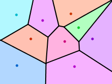
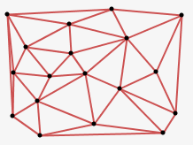
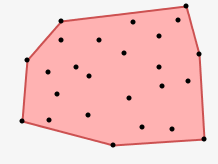

Mesh – A Processing Library
Mesh is a library for creating Voronoi, Delaunay and Convex Hull diagrams in Processing. After searching online for a Java package for creating Voronoi diagrams and failing to find anything simple enough to fit my needs I decided to make my own as simple as possible. I did find the wonderfully useful QuickHull3D package, which the algorithms for creating these diagrams are based on. These complete in O(n log n) time.
Voronoi Diagram
Voronoi Diagrams show the regions of space closest to each point. This can be used to create interesting visual patterns or as a preprocess for determining which point is closest to any given place in space. This is particulary useful for optimization in game design.
new Voronoi( float[][] points )
This creates and returns a new Voronoi object, which you can later ask for edges and regions. It takes a two dimensional array for describing points, you can think of this as an array of points.
float[][] points = new float[3][2]; points[0][0] = 120; // first point, x points[0][1] = 230; // first point, y points[1][0] = 150; // second point, x points[1][1] = 105; // second point, y points[2][0] = 320; // third point, x points[2][1] = 113; // third point, y Voronoi myVoronoi = new Voronoi( points );
getRegions()
getRegions() returns an array of MPolygons, the order of which correspond to the order of the points entered. MPolygon contains the points of the polygon, and can be drawn to the stage.
MPolygon[] myRegions = myVoronoi.getRegions();
for(int i=0; i<myRegions.length; i++)
{
// an array of points
float[][] regionCoordinates = myRegions[i].getCoords();
fill(255,0,0);
myRegions[i].draw(this); // draw this shape
}
getEdges()
getEdges() returns a two dimensional array, or an array of lines. Use this to draw stroke lines on top of the regions.
float[][] myEdges = myVoronoi.getEdges();
for(int i=0; i<myEdges.length; i++)
{
float startX = myEdges[i][0];
float startY = myEdges[i][1];
float endX = myEdges[i][2];
float endY = myEdges[i][3];
line( startX, startY, endX, endY );
}
Delaunay Diagram
A Delaunay Diagram is an optimal triangulation of a given set of points. This is very helpful for applying mesh textures, or creating structures for physical simulation. Voronoi and Delaunay Diagrams are duals. For every edge of a Delaunay diagram, an edge of a Voronoi diagram perpendicularly bisects it.
new Delaunay( float[][] points )
This creates and returns a new Delaunay object, which you can later ask for edges and links. It takes a two dimensional array for describing points, you can think of this as an array of points.
float[][] points = new float[3][2]; points[0][0] = 120; // first point, x points[0][1] = 230; // first point, y points[1][0] = 150; // second point, x points[1][1] = 105; // second point, y points[2][0] = 320; // third point, x points[2][1] = 113; // third point, y Delaunay myDelaunay = new Delaunay( points );
getEdges()
getEdges() returns a two dimensional array, or an array of lines. Use this to draw lines for connections.
float[][] myEdges = myDelaunay.getEdges();
for(int i=0; i<myEdges.length; i++)
{
float startX = myEdges[i][0];
float startY = myEdges[i][1];
float endX = myEdges[i][2];
float endY = myEdges[i][3];
line( startX, startY, endX, endY );
}
getLinks()
getLinks() returns a two dimensional array, or an array of links. This is similar to getEdges() however rather than returning the actual coordinates of the edges, it returns integers which are indexes to the points array used to create the Delaunay object. This can be useful when the links themselves are important, such as when building springs in a particle system.
int[][] myLinks = myDelaunay.getLinks();
for(int i=0; i<myLinks.length; i++)
{
int startIndex = myLinks[i][0];
int endIndex = myLinks[i][1];
float startX = points[startIndex][0];
float startY = points[startIndex][1];
float endX = points[endIndex][0];
float endY = points[endIndex][1];
line( startX, startY, endX, endY );
}
getLinked( int index )
Similarily, getLinked( int index ) returns indexes to the original points array. It takes an index and returns those indexes which are linked to it in the Delaunay diagram.
int[] localLinks = myDelaunay.getLinked(0); // those linked to point #1 println( localLinks ); // outputs: // [0] 2 // [1] 1
Convex Hull
A Convex Hull is the encompassing shape around a group of points. As if you were to wrap a piece of string around all of the points. This is handy when doing collision tests on complex shapes, or finding the most extreme points within a dataset.
new Hull( float[][] points )
This creates and returns a new Hull object, which you can later ask for region and extrema. It takes a two dimensional array for describing points, you can think of this as an array of points.
float[][] points = new float[3][2]; points[0][0] = 120; // first point, x points[0][1] = 230; // first point, y points[1][0] = 150; // second point, x points[1][1] = 105; // second point, y points[2][0] = 320; // third point, x points[2][1] = 113; // third point, y Hull myHull = new Hull( points );
getRegion()
getRegion() returns an MPolygon of the Convex Hull. MPolygon contains the points of the polygon, and can be drawn to the stage.
MPolygon myRegion = myHull.getRegion(); fill(255,0,0); myRegion.draw(this);
getExtrema()
getExtrema() returns an array of integers which are indexes to the original points array. These points are extrema within the set of points and are the vertices of the hull. The order of which are clockwise from the topmost point.
int[] extrema = myHull.getExtrema(); println( extrema ); // outputs: // [0] 1 // [1] 2 // [2] 0
Install
- Download Mesh
- Unzip into Processing's libraries folder
- Sketch → Import Library → mesh
Contribute
- Github leebyron/mesh